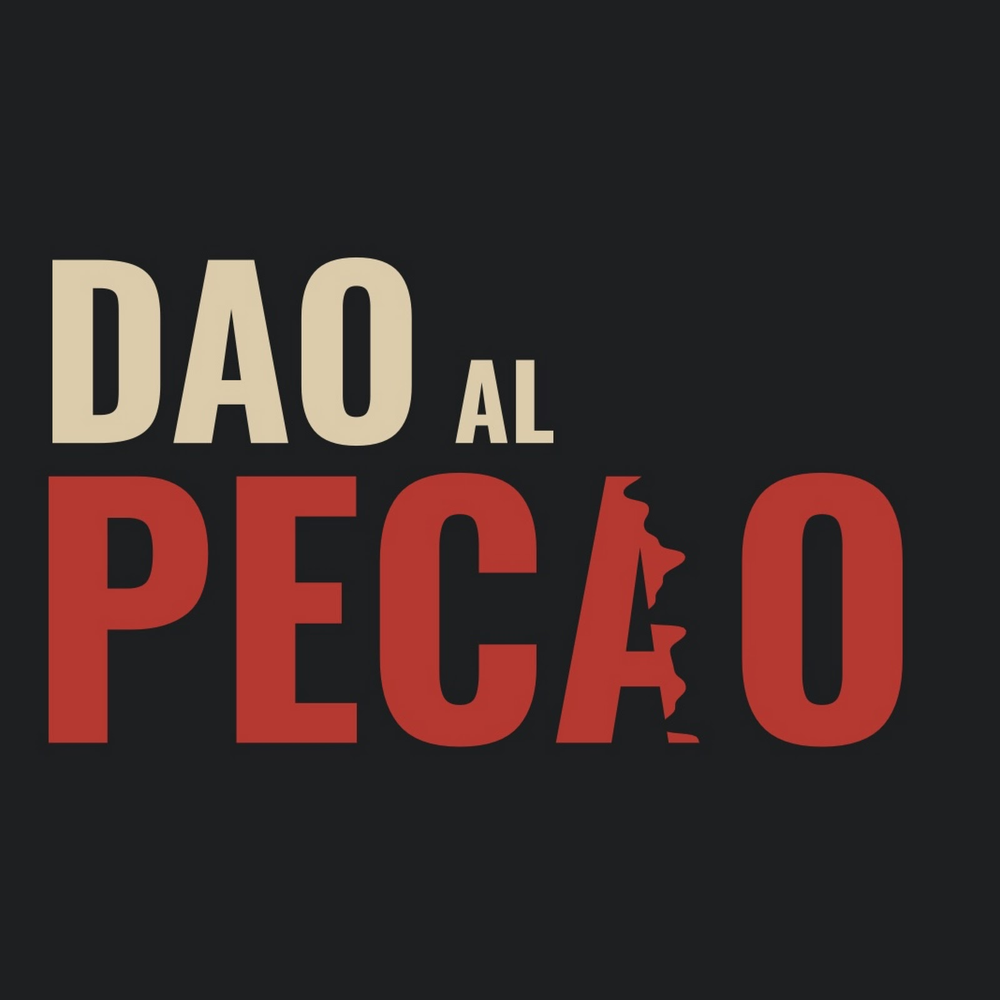

Términos de servicio
Última actualización: 9 de noviembre de 2026
1. Contenido del canal
Las historias de misterio de Dao al PECAO son obras de ficción originales. Cualquier parecido con personas o hechos reales es coincidencia. Los episodios de historia se basan en fuentes que citamos en cada video; algunas escenas son recreaciones ilustrativas hechas con inteligencia artificial y se identifican como tales.
2. Uso del contenido
Los videos, guiones, imágenes y música originales de Dao al PECAO están protegidos por derechos de autor. Puedes compartir los enlaces libremente; no está permitido volver a subir los videos ni usarlos con fines comerciales sin autorización.
3. Aplicación interna
La aplicación «Dao al PECAO» es una herramienta interna del canal y no se ofrece al público. Su uso de las API de YouTube está sujeto a los Términos de servicio de YouTube y a nuestra política de privacidad.
4. Comentarios
Agradecemos tus comentarios en los videos. Nos reservamos el derecho de ocultar mensajes ofensivos, spam o que incumplan las normas de la comunidad de YouTube.
5. Cambios
Podemos actualizar estos términos; la fecha de la última versión aparece arriba.
English: Dao al PECAO’s mystery stories are original fiction. History episodes cite their sources and may include clearly labeled AI-generated illustrative recreations. The “Dao al PECAO” app is an internal tool subject to the YouTube Terms of Service and our privacy policy.